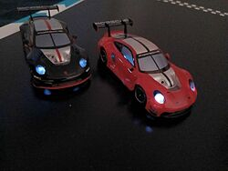

OmegaSim Wiki – die Idee dazu stammt von Gnen54. Hier stehen die offenen Artikel von Nutzer Luuke42 unter der Lizenz CC BY-SA 4.0.
Carrera HYBRID
Stand dieses Artikels: OmegaSim 1.2.9 vom 26.10.2026 · Firmware des Autos: nicht bekannt (OmegaSim liest die Firmware-Version nicht aus)
Dieser Text wurde mithilfe von KI erstellt (Claude) und ist nicht in jedem Punkt von Menschen geprüft. Fehler bitte direkt verbessern oder auf der Diskussionsseite melden, siehe Mitmachen. Die öffentliche Fassung auf luuke42.github.io/omegasim kann älter sein als der hier beschriebene Stand.


Carrera HYBRID ist ein Spielsystem des Herstellers Carrera, bei dem kleine, per Bluetooth Low Energy gesteuerte Rennautos im Maßstab 1:50 frei auf lose ausgelegten Streckenteilen fahren. Anders als bei einer klassischen Carrera-Bahn gibt es keine Führungsrille: Ein Sensor an der Unterseite liest einen Strichcode auf dem Streckenteil, und das Auto meldet der App, auf welchem Teil es gerade fährt. Gesteuert wird es von der Original-App des Herstellers oder von unabhängigen Programmen wie OmegaSim, die dieselbe Funkschnittstelle sprechen. Dieser Artikel beschreibt das Auto und sein Funkprotokoll so, wie sie in der Dokumentation und im Quelltext von OmegaSim festgehalten sind; das Protokoll ist nicht offengelegt, sondern aus Mitschnitten rekonstruiert.
Auf einen Blick
| Merkmal | Wert | Beleg |
|---|---|---|
| Funk | Bluetooth Low Energy, Gerätename beginnt mit HYBRID- |
src/10-ble-explorer.js
|
| Steuerkanal | Nordic UART Service (NUS), Merkmal RX 6e400002-… |
src/50-drive.js, NUS_RX
|
| Meldekanal | NUS TX 6e400003-…, Notifications |
src/50-drive.js, NUS_TX
|
| Befehlspaket | 20 Byte, beginnt mit 0xAF, endet mit CRC-8 |
buildCommandPacket()
|
| Sendetakt in OmegaSim | 45 ms (rund 22 Pakete je Sekunde) | CONTROL_SEND_INTERVAL_MS
|
| Gas | Byte 6, Neutral 0xDF, ±Δ Gasschritte |
src/20-protocol.js
|
| Lenkung | Byte 7 (und Kopie in Byte 9), vorzeichenbehaftet −127 … +127 | src/20-protocol.js
|
| Licht und Leseart | Byte 14, einzelne Bits | LIGHT_HEAD, TRACK_BIT_RAIL
|
| Tempo | 0,0119 m/s je Gasschritt, Vollgas rund 1,51 m/s | TACHO_SCALE, src/30-input.js
|
| Fahrbahn | 25 cm breit, Gerade rund 43 cm lang | CARRERA_HYBRID.md |
| Firmware-Update | Nordic Secure DFU vorhanden, OmegaSim nutzt es nicht | siehe Firmware |
| Status der Entschlüsselung | Kernbytes gesichert, einige Bytes offen | siehe unten |
Grundlagen
Wer das Protokoll lesen will, braucht ein paar Begriffe. Sie werden hier kurz erklärt; ausführlicher stehen sie im Glossar und in den Artikeln Hexadezimalsystem und Bluetooth Low Energy.
Bit, Byte und Hexadezimalzahl
Ein Bit ist die kleinste Informationseinheit: 0 oder 1. Acht Bits ergeben ein Byte, das Werte von 0 bis 255 annehmen kann. Weil lange Bitfolgen unhandlich sind, schreibt man Bytes meist hexadezimal (zur Basis 16, Ziffern 0–9 und A–F) mit dem Vorsatz 0x. Eine Hex-Ziffer steht genau für vier Bits, ein Byte also für zwei Hex-Ziffern:
| Hex | Dezimal | Binär | Bedeutung im Auto |
|---|---|---|---|
0x0A |
10 | 0000 1010 |
Streckencode „Engstelle“ (Bahn) oder Start/Ziel (Ausdruck) |
0x20 |
32 | 0010 0000 |
Bit 5 gesetzt: Leseart „Auf der Bahn“ |
0x22 |
34 | 0010 0010 |
Bit 5 und Bit 1: Bahn plus Scheinwerfer |
0xAF |
175 | 1010 1111 |
Rahmenkennung, erstes Byte jedes Befehls |
0xDF |
223 | 1101 1111 |
Gas neutral |
Bits zählt man von rechts: Bit 0 ist die Einerstelle (Wert 1), Bit 1 hat den Wert 2, Bit 5 den Wert 32 (0x20), Bit 7 den Wert 128 (0x80). Ein Byte, in dem mehrere Schalter stecken, heißt Bitfeld; man setzt einen Schalter mit ODER (|) und prüft ihn mit UND (&).
Vorzeichenbehaftetes Byte
Ein Byte kann auch negative Zahlen tragen („Zweierkomplement“): 0 bis 127 bleiben positiv, 128 bis 255 bedeuten −128 bis −1. So steht 0x7F für +127 (voll rechts), 0x81 für −127 (voll links). Das hat eine Falle: Rechnet man über 127 hinaus, „bricht“ der Wert in den negativen Bereich um. Ein Lenkwert von +128 käme als −128, also als Vollausschlag in die andere Richtung an. OmegaSim begrenzt deshalb jeden Lenkwert hart auf ±127.
Modulo-256-Rechnung
Ein Byte kann nicht über 255 hinaus; was darüber liegt, läuft wieder bei 0 los (Rechnung „modulo 256“). Das Gasbyte nutzt das absichtlich: 0xDF + 56 = 0x117, davon bleibt im Byte 0x17.
Prüfsumme
Eine Prüfsumme ist ein aus allen übrigen Bytes errechnetes Kontrollbyte. Der Empfänger rechnet sie nach; stimmt sie nicht, verwirft er das Paket. Bei HYBRID ist es eine CRC-8 (zyklische Redundanzprüfung mit 8 Bit), siehe unten.
GATT, Dienst, Merkmal, Notification
Bluetooth-Low-Energy-Geräte ordnen ihre Daten in einem Baum namens GATT (Generic Attribute Profile). Ganz oben stehen Dienste (englisch services), darin Merkmale (characteristics), also einzelne Datenfelder mit einer weltweit eindeutigen Kennung (UUID). Ein Merkmal kann man lesen, beschreiben oder abonnieren. Beim Schreiben mit Antwort bestätigt das Auto jedes Paket; beim Schreiben ohne Antwort schickt die App das Paket einfach ab. Ein Abonnement heißt Notification: Das Auto schickt von sich aus neue Werte, ohne dass die App fragt. Wie oft gefunkt wird, legt das Verbindungsintervall fest, das Handy und Auto aushandeln; mehr dazu in OmegaBle.
Firmware
Die Firmware ist das Programm im Auto. Sie setzt die empfangenen Zielwerte in Motor- und Servobewegung um, liest den Sensor aus und sendet die Meldungen.
Bedienung
So wird ein HYBRID-Auto mit OmegaSim in Betrieb genommen:
- Auto einschalten und aufladen. Ein Auto, das bereits mit einem anderen Gerät verbunden ist, wirbt nicht und wird nicht gefunden.
- In OmegaSim FAHREN → Autos → Auto verbinden (in der Garage). Im Browser wählt man das Auto im Auswahlfenster des Browsers (Filter: Name beginnt mit „HYBRID“ oder Gerät bietet den Nordic UART Service an). In der Android-App öffnet sich die Suche des Bluetooth-Plugins.
- Nach dem Verbinden spielt OmegaSim einen Anlassklang; das erste verbundene Auto wird Spieler 1, jedes weitere ein NPC, sofern keine gemerkte Rolle vorliegt.
- Die Leseart wählen: Auf der Bahn für die Kunststoffteile, Ausdruck für gedruckte Muster (FAHREN → Strecke, am Gamepad L1). Siehe Strecke.
- Mit Blinken in der Garage lässt sich prüfen, welches physische Auto zu welcher Zeile gehört.
- Fahren. Gas, Lenkung und Licht schickt OmegaSim im 45-ms-Takt; die Meldungen des Autos (Akku, Streckencode, Teilezähler) erscheinen im Cockpit.
- Zum Trennen Garage → Alle trennen. Reagiert ein Auto nicht, hilft Keine Reaktion des Fahrzeugs.
Einstellungen
Am Auto selbst gibt es keine Einstellungen; OmegaSim bietet die folgenden, die direkt Bytes des Protokolls betreffen.
| Name in der App | Bereich/Werte | Standard | Wirkung (aus dem Code) | Interner Schlüssel/ID |
|---|---|---|---|---|
| Leseart (FAHREN → Strecke) | Auf der Bahn / Ausdruck | Auf der Bahn | setzt in Byte 14 Bit 5 (0x20) oder Bit 7 (0x80) |
trackMode ('on'/'off')
|
| Licht (Dreieck/Y) | an/aus | an | Bit 1 in Byte 14 (LIGHT_HEAD) |
headlightsOn
|
| Marke / Modell (Garage) | Nicht zugeordnet, BMW, Porsche 911, Ford Mustang, Ferrari, Audi, McLaren, Mercedes, Red Bull, VW Käfer | Nicht zugeordnet | nur Anzeige, Ansagen und Kartensymbol; ändert kein Byte | car.modellId
|
| Leistung über Akkulaufzeit konstant halten (Optionen → Allgemein → Akku, WIP) | an/aus | aus | multipliziert das Vorwärtsgas mit dem Ausgleichsfaktor (siehe Akku) | setting-battery-comp
|
| Referenz-Akkustand | 20–100 % in 5er-Schritten | 50 % | Zielwert des Ausgleichs | setting-battery-ref
|
| Bekannte Autos beim Start verbinden (System, nur App) | an/aus | an | verbindet gemerkte Autos über ihre MAC-Adresse | setting-autoverbinden
|
Funktionsweise
Aufbau des Autos
| Bauteil | Aufgabe | Gesichert? |
|---|---|---|
| Motor | treibt die Hinterräder an | ja |
| Lenkservo | dreht die Vorderräder; Lenkbereich in OmegaSims Rechnung bis 45 Grad | ja (Winkel geschätzt) |
| Akku | wiederaufladbar, im Fahrzeug | ja |
| Bluetooth-Chip | Funkverbindung zum Handy | Typ vermutet: Nordic nRF52 (wegen Nordic UART und Nordic DFU) |
| Streckensensor | liest den Strichcode an der Unterseite | Bauart (Kamera oder Infrarot) noch nicht gesichert |
| Lichter | Scheinwerfer, Rück- und Bremslicht | Bremslicht seit 19.08.2026 belegt |
| Bewegungssensor | liefert Rohwerte in Byte 1 und 3 der Meldung | vermutet, Bedeutung unbestätigt |
Bluetooth-Schnittstelle (GATT)
Ausgelesen mit dem BLE-Explorer von OmegaSim und aus der Auswertung des Mitschnitts vom 13.08.2026 mit tools/parse_btsnoop.py (Mitschnitte und Auswertung liegen nur lokal; sie werden absichtlich nicht veröffentlicht, weil sie Geräteadressen enthalten). Die Spalte „Eigenschaften“ gibt das Eigenschaftsbyte aus dem Mitschnitt wieder: 0x02 lesen, 0x04 schreiben ohne Antwort, 0x08 schreiben mit Antwort, 0x10 Notification, 0x20 Indication.
| Dienst | Merkmal | UUID | Eigenschaften | Zweck |
|---|---|---|---|---|
| Generic Access | Device Name | 00002a00-0000-1000-8000-00805f9b34fb |
0x0A (lesen, schreiben) |
Name „HYBRID-…“ |
| Generic Access | Appearance | 00002a01-… |
0x02 |
Gerätetyp |
| Generic Access | Preferred Connection Params | 00002a04-… |
0x02 |
gewünschte Verbindungsparameter des Autos |
| Generic Access | Central Address Resolution | 00002aa6-… |
0x02 |
Standardfeld |
| Generic Attribute | – | 00001801-… |
– | Standarddienst |
| Nordic UART Service | – | 6e400001-b5a3-f393-e0a9-e50e24dcca9e |
– | Fahrzeugsteuerung |
| Nordic UART Service | RX (App → Auto) | 6e400002-b5a3-f393-e0a9-e50e24dcca9e |
0x0C (mit und ohne Antwort) |
Befehlspakete |
| Nordic UART Service | TX (Auto → App) | 6e400003-b5a3-f393-e0a9-e50e24dcca9e |
0x10 (Notification) |
Meldepakete |
| Nordic Secure DFU | – | 0000fe59-… |
– | Firmware-Update, siehe Firmware |
| Nordic Secure DFU | Bootloader-Trigger | 8ec90003-f315-4f60-9fb8-838830daea50 |
0x28 (schreiben, Indication) |
versetzt das Auto in den Update-Modus |
Die Original-App schreibt im Mitschnitt mit „Write Command“, also ohne Antwort; OmegaSim tut dasselbe, wenn das Merkmal es anbietet (funkSchreiben())[1].
Das Befehlspaket (App → Auto)
Jeder Befehl ist 20 Byte lang. OmegaSim baut ihn an genau einer Stelle, buildCommandPacket()[2]:
| Byte | OmegaSim sendet | Bedeutung | Stand |
|---|---|---|---|
| 0 | 0xAF |
Rahmenkennung | gesichert |
| 1–5 | 0x00 |
unbenutzt | konstant aus Mitschnitten |
| 6 | (0xDF + Δ) mod 256 |
Gas/Bremse, Δ = Gasschritte | gesichert |
| 7 | Lenkwert & 0xFF |
Lenkung, vorzeichenbehaftet, positiv = rechts | gesichert (Rechtskurve im Mitschnitt bei 0x7F)
|
| 8 | 0x80 |
nach seVen: Fahrstil | Wert aus Mitschnitt der Original-App |
| 9 | Kopie von Byte 7 | Lenkung (Doppel) | die Original-App sendete hier teils andere Werte; Bedeutung offen |
| 10 | 0x60 (Spieler), 0x20 (Selbstführung) |
Betriebsart; nach seVen: Fahrassistent | Bedeutung offen |
| 11 | 0x00 |
– | konstant |
| 12 | 0x01 |
nach seVen: Hersteller (0x01 Porsche) |
konstant |
| 13 | 0x00 |
– | konstant |
| 14 | Bitfeld | Licht und Leseart, siehe unten | gesichert für Bits 0, 1, 2, 5, 7 |
| 15 | 0x04 (Spieler), 0x0C (Selbstführung) |
Betriebsart | aus Mitschnitt; Bedeutung offen |
| 16–18 | 0x00 oder Vorausblick |
Typen der nächsten drei Streckenteile, nur bei Selbstführung | gesichert aus Mitschnitt 20.08.2026 |
| 19 | CRC-8 über Byte 0–18 | Prüfsumme | gesichert |
Die Bytes 10 und 15 wechseln OmegaSim auf 0x20/0x0C, wenn das Auto sich selbst auf der Bahn halten soll (NPCs im Leitplanken-Modus, Autopilot, Fahrhilfe). Das sind genau die Werte, die die Original-App an ihre eigenen Gegner schickte: über 2496 und 2457 Pakete konstant[3].
Gasbyte
Das Gasbyte rechnet modulo 256 um die Neutralstellung 0xDF:
Δ = round(Gasanteil × 127), begrenzt auf MIN_THROTTLE_DELTA … +127 (= −64 … +127) Byte6 = (0xDF + Δ) mod 256
- Gasanteil: Ausgang des Fahrmodells, −1 bis +1.
- Δ: Zahl der Gasschritte; positiv vorwärts, negativ Bremse bzw. rückwärts.
- MIN_THROTTLE_DELTA: −64, die am Auto als sicher bestätigte Rückwärtsgrenze[4].
Die Byte-Bereiche nach der Protokollbeschreibung von seVen:
| Byte-Bereich | Bedeutung | Δ |
|---|---|---|
0xDF |
neutral | 0 |
0xE0–0xFF, dann 0x00–0x6F |
vorwärts, 144 Stufen | +1 … +144 (OmegaSim nutzt bis +127 = 0x5E)
|
0x80–0xDE |
rückwärts/bremsen, 95 Stufen | −95 … −1 |
0x70–0x7F |
nicht beschrieben | – |
Damit erklärt sich ein alter Befund: Δ = −127 ergibt Byte 0x60, und das liegt im Vorwärtsbereich. Am 20.08.2026 fuhr das Auto bei vollem Rückwärtswert tatsächlich vorwärts, bei Δ = −64 (0x9F) korrekt rückwärts[4]. Die Grenze 0x80 (Δ = −95) ist am Auto noch nicht nachgefahren.
Lenkbyte
steerDelta = clamp(round(Lenkanteil × 127), −127, +127) Byte7 = steerDelta & 0xFF (Zweierkomplement)
127 ist der größte Wert des vorzeichenbehafteten Bereichs, und OmegaSim sendet ihn bei Vollanforderung. Ein Regler kann das Auto also nicht weiter einschlagen lassen als seine Mechanik; ein Wert über 1,0 würde umbrechen und in die Gegenrichtung lenken, deshalb ist der Deckel bei 1,0 Pflicht[5].
Licht und Leseart: Byte 14
| Bit | Maske | Wirkung | Stand |
|---|---|---|---|
| 0 | 0x01 |
Bremslicht (LIGHT_BRAKE) |
belegt seit Mitschnitt 19.08.2026 |
| 1 | 0x02 |
Scheinwerfer (LIGHT_HEAD); das Rücklicht schaltet die Firmware mit |
belegt |
| 2 | 0x04 |
Scheinwerfer blinkt statt dauerhaft zu leuchten | am Auto zweimal reproduziert, von OmegaSim ungenutzt |
| 3, 4 | 0x08, 0x10 |
kein sichtbarer Unterschied | am Auto erprobt |
| 5 | 0x20 |
Leseart „Auf der Bahn“: liest die Kunststoffschiene, Auto hält sich selbst darauf (TRACK_BIT_RAIL) |
gesichert |
| 6 | 0x40 |
kam in beiden Betriebsarten der Original-App vor, Bedeutung offen; kein sichtbarer Lichtunterschied | OmegaSim sendet 0 |
| 7 | 0x80 |
Leseart „Ausdruck“: liest gedruckte Muster (TRACK_BIT_PRINT) |
gesichert |
Bit 5 und Bit 7 schließen sich aus. Gemessen in einer einzigen Aufzeichnung vom 21.08.2026, nur Meldungen während der Fahrt: mit Bit 7 kamen in 551 Meldungen 0 Lesungen, mit Bit 5 in 1194 Meldungen 1103 Lesungen und 1033 Kachelschritte (87 %)[6]. Dass Bit 7 einmal als „Licht-Grundwert“ missverstanden und dauernd gesendet wurde, kostete das Projekt zwölf Aufzeichnungen ohne eine einzige Streckenlesung.
Eine defekte Lampe (Schadensmodell) wird ebenfalls in buildCommandPacket() ausgeblendet, nicht als hartes Aus, sondern als Wackelkontakt:
Abschnitt = floor(Zeit_ms / 70) + Saat × 977 leuchtet = ((Abschnitt × 2654435761) mod 2^32) / 2^32 > 0,86
Die Lampe leuchtet also in rund 14 % der 70-ms-Abschnitte kurz auf. Die Folge hängt an der Uhr und nicht an der Senderate, damit sie bei jedem Takt gleich aussieht[7].
Vorausblick: Bytes 16–18
Im Mitschnitt vom 20.08.2026 (Leitplanken-Modus der Original-App, 67 s Verkehr) wurden im selben Paket, in dem Bit 5 in Byte 14 aufging, erstmals die Bytes 16–18 belegt: die Typen der nächsten drei Streckenteile als Fenster über die eingescannte Strecke, das an jeder Teilegrenze weiterrückt. Alle neun beobachteten Fenster waren aufeinanderfolgende Dreiergruppen desselben Rings; zufällig wäre das mit 1,3·10−6 zu erwarten[8]. OmegaSim füllt die Bytes über ghostLookahead(), aber nur, wenn eine Strecke eingescannt ist und das Auto die Bahn liest.
Prüfsumme (CRC-8)
// src/10-ble-explorer.js, crc8()
function crc8(bytes) {
let crc = 0xff;
for (const b of bytes) {
crc ^= b;
for (let i = 0; i < 8; i++) {
crc = (crc & 0x80) ? ((crc << 1) ^ 0x31) & 0xff : (crc << 1) & 0xff;
}
}
return crc;
}
Ablauf in Worten:
- Startwert
crc = 0xFF. - Für jedes Byte 0 bis 18:
crc = crc XOR Byte. - Achtmal: Ist das oberste Bit (Bit 7) gesetzt, wird
crcum eins nach links geschoben und mit dem Polynom0x31(binär0011 0001, entspricht x8+x5+x4+1) verknüpft; sonst nur geschoben. Alles bleibt auf 8 Bit beschränkt. - Das Ergebnis ist Byte 19.
Die Rechnung reproduziert drei aufgezeichnete Prüfsummen der Original-App exakt (0xA4, 0x33, 0xE0). Ein einfaches XOR über Byte 0–18, wie es seVen beschreibt, ergäbe für das Leerlaufpaket 0x17 statt der aufgezeichneten 0x33. Der Selbsttest „Protokoll: CRC-8“ prüft genau dieses Leerlaufpaket[9].
Das Meldepaket (Auto → App)
Das Auto schickt ständig Notifications auf NUS TX. Im Mitschnitt vom 13.08.2026 sind alle 670 Meldungen 19 Byte lang und beginnen ebenfalls mit 0xAF. OmegaSim verwirft Meldungen unter 16 Byte (onCarNotify()). Gelesen werden:
| Byte | Inhalt | Auswertung in OmegaSim | Stand |
|---|---|---|---|
| 0 | 0xAF |
– | aus Mitschnitt |
| 1 | Rohwert, ändert sich erst in Fahrt | Crash-Erkennung, Crashrichtung (vorn/hinten) | vermutlich Bewegungssensor, unbestätigt |
| 3 | Rohwert, wechselte in einer Aufnahme das Vorzeichen mit der Kurvenrichtung | Drehsignal gyroRaw.x, Crash, Rammen |
„motion-ish. Unconfirmed“ (Code-Kommentar) |
| 10 | Akkustand, Rohwert | Prozentanzeige, siehe Akku | Skala geschätzt |
| 11 | Kachelzähler, ein Schritt je Streckenteil | Rundenzählung, Ortung, Phase der Ideallinie | gesichert |
| 12 | Streckencode des Teils unter dem Sensor | Rundenzählung, Scan, NPC-Steuerung, Abseits | gesichert, siehe Strecke |
| 14 | nach seVen: gemessenes Tempo (Kodierung wie Befehlsbyte, 0xDF neutral) |
nicht gelesen | offen |
| 15 | Bit 3 (0x08): Ziellinien-Sperre |
Rundenzeit an der Ziellinie | gesichert |
Ein Beispiel aus dem Mitschnitt vom 13.08.2026, Auto steht, kein Code gelesen:
AF 00 9C 00 00 00 00 00 00 00 95 00 FF 00 DF 00 00 00 B3
^^ ^^ ^^
Byte 10 Byte 12 Byte 14
Akku 0x95=149 0xFF=nichts gelesen 0xDF (neutral)
Das letzte Byte ist hier keine CRC-8 nach dem Befehlsverfahren (nachgerechnet ergäbe sich 0xF1); welches Verfahren das Auto für seine Meldungen benutzt, ist noch nicht gesichert.
Streckencode (Byte 12)
Das Auto liest je nach Leseart eine andere Codetabelle. Auf der Bahn:
| Code | Teil | Code | Teil |
|---|---|---|---|
0x00 |
abseits der Bahn | 0x07 |
Boxengasse / lange Gerade |
0x01 |
Start/Ziel | 0x08 / 0x09 |
weite 30-Grad-Kurve links / rechts |
0x02 |
Gerade | 0x0A |
Engstelle |
0x03 |
Linkskurve 60 Grad | 0x0B / 0x0C |
kleine 30-Grad-Kurve links / rechts |
0x04 |
Rechtskurve 60 Grad | 0xFF |
nichts gelesen (z. B. Leseart Ausdruck auf der Schiene) |
0x05 / 0x06 |
Haarnadel links / rechts |
Im Ausdruck-Modus meldet das Original-Startblatt 0x0A, die Blätter von OmegaSim 0x01; isStartCode() akzeptiert dort beide, auf der Schiene nur 0x01, damit eine Engstelle keine Phantomrunde zählt[10]. Wie das Auto aus dem Strichcode die Zahl bildet, ist offen; Einzelheiten zu Codes und Strichmaßen stehen in Strecke#Streckencode.
Kachelzähler (Byte 11)
Byte 11 springt um eins, sobald das Auto ein neues Teil erkennt. Das ist das einzige echte Ortsereignis: Das Auto meldet, dass es auf einem neuen Teil ist, nicht wo darauf. Verlässt das Auto die Bahn, läuft der Zähler schnell weiter (im Mitschnitt vom 20.08.2026 von 6 über 8, 9, 15 auf 18 in drei Sekunden), während Byte 12 0x00 meldet. OmegaSim rechnet deshalb die Position innerhalb eines Teils aus dem gefahrenen Weg seit dem letzten Zählersprung (siehe NPC-Fahrverhalten).
Ziellinie (Byte 15, Bit 3)
Auf dem Start/Ziel-Teil setzt das Auto Bit 3 in Byte 15 im Mittel 455 ms nach dem Strichcode (bei 78–84 % der Teilelänge, rund 35 cm weiter) und hält es per Zeitglied rund eine Sekunde (Median 981–1050 ms). Nur die steigende Flanke ist ein Ort. Dass es keine Rückspiegelung des eigenen Befehls ist, zeigt die Statistik: In einer Verbindung schrieb die Original-App Bit 3 in 100 % der Befehle, gemeldet war es nur in 12 % der Meldungen[11]. Seit 0.9.37 misst OmegaSim die Rundenzeit an dieser Flanke; Autos, die sie nie melden, zählen weiter über den Strichcode.
Melde-Takt
Wie oft das Auto meldet, hängt am ausgehandelten Verbindungsintervall:
- Mitschnitt 13.08.2026 (Original-App): Median 61 ms zwischen zwei Meldungen, Mittel 52 ms; Befehle der Original-App im Median alle 52 ms.
- Mitschnitt 20.08.2026: 14,6 Hz, Median 69 ms[12].
- OmegaSim erwartet „etwa alle 45 ms“ und fordert das schnelle Verbindungsintervall neu an, wenn der geglättete Abstand über 75 ms steigt (siehe OmegaBle#Verbindungspriorität).
Ein Meldetakt von 69 ms ist langsamer als OmegaSims Sendetakt von 45 ms. Daraus folgt, dass die Querregelung im Leitplanken-Modus im Auto selbst laufen muss: Eine Rückmeldung zur Querlage gibt es im Protokoll nicht.
Tempo und Tempo-Grenzen
Jede Tempozahl im Code von OmegaSim (0,35, 0,37, 0,1645 …) ist ein Anteil des Gasbytes, nicht die Höchstgeschwindigkeit eines bestimmten Autos. Gemessen wurde die Umrechnung an den Geraden der Mitschnitte vom 16. bis 21.08.2026 (Gasbytes 43, 50 und 56 auf 43-cm-Geraden: 0,86 s, 0,74 s und 0,63 s je Gerade)[13]:
Δ = round(Anteil × 127) v [m/s] = 0,0119 × Δ v [km/h] = 3,6 × v = 0,0428 × Δ Tacho = Anteil × 272,5 km/h ≈ 2,146 × Δ km/h (Maßstab 1:50)
- Anteil: Wert zwischen 0 und 1, wie er im Code steht.
- 0,0119 m/s: gemessene Steigung je Gasschritt; das Auto ist im gemessenen Bereich proportional zum Gas.
- 272,5 km/h: Hochrechnung der gemessenen 1,51 m/s bei Δ = 127 auf den Maßstab 1:50 (5,45 km/h × 50), ±10 %, weil kein Mitschnitt eine Vollgasfahrt enthält.
| Größe (Konstante) | Anteil | Δ | echt (m/s) | Tacho (km/h) | Wer |
|---|---|---|---|---|---|
Scan Haarnadel (SCAN_TEMPO_HAARNADEL) |
0,1645 | 21 | 0,25 | 45 | Scan |
Scan Gerade bis 1.2.4 (SCAN_TEMPO) |
0,2345 | 30 | 0,36 | 64 | Scan |
Boxentempo (PIT_SPEED_FACTOR) |
0,2936 | 37 | 0,44 | 80 | Boxengasse |
„Leseschwelle“ GHOST_READ_MIN = Formationstempo |
0,35 | 44 | 0,52 | 95 | alle |
Mindesttempo im Rennen GHOST_FAHR_MIN |
0,37 | 47 | 0,56 | 101 | NPC, Gelb |
| Gelb-Tempo auf der Geraden | 0,4025 | 51 | 0,61 | 110 | alle |
| NPC-Stufen einfach / mittel / schnell | 0,45 / 0,55 / 0,65 | 57 / 70 / 83 | 0,68 / 0,83 / 0,99 | 123 / 150 / 177 | NPC |
Die „Leseschwelle“ 0,35 ist nicht gemessen, sondern die alte Untergrenze eines Reglers. Der Scan liest in der Haarnadel noch mit Δ 21, und in den Mitschnitten liefen Teilewechsel auch bei rund Δ 25. Die echte Lesegrenze liegt vermutlich bei Δ 20–25; 0,35 ist eine vorsichtige Betriebsgrenze[14]. Mit 1.2.5 fährt der Scan auf Geraden 80 % statt 67 % des Formationstempos.
Unter Autopilot und bei NPCs wirken weder der Fahrgefühl-Faktor (topSpeedScale) noch der Akku-Ausgleich; im eingeschwungenen Zustand geht also genau der Sollwert hinaus.
Akku
Byte 10 ist ein Rohwert ohne kalibrierte Skala. OmegaSim rechnet seit 0.9.87[15]:
roh_geglättet = Maximum aller Rohwerte der letzten 5 s Prozent = clamp( round( (roh_geglättet − 138) / (155 − 138) × 100 ), 0, 100 )
- 138 (
AKKU_LEER): untere Grenze, angehoben, weil Autos schon „blinkten und die Verbindung verloren, bevor der Akku als leer angezeigt wurde“. - 155 (
AKKU_VOLL): obere Grenze. - Die Glättung nimmt das Maximum, nicht den Mittelwert: kurze Einbrüche unter Last sollen die Anzeige nicht nach unten reißen.
Je Auto merkt sich OmegaSim den kleinsten je gemeldeten Rohwert (akkuMinRoh, in der Garage angezeigt), damit die Untergrenze später nachgemessen werden kann. seVen nennt 131 bis 155, eine ältere Fassung von OmegaSim rechnete mit 111; alle drei Werte sind Schätzungen.
Der optionale Akku-Ausgleich[16]:
Faktor = clamp( Referenz / max(0,05, Prozent/100), 0,2, 1 ) Gas_vorwärts_gesendet = Gas_vorwärts × Faktor
Er drosselt also nur bei vollem Akku und gibt nie mehr als 100 %.
Fahrphysik: im Auto, nicht in der App
Die eigentliche Fahrdynamik entsteht in der Firmware. Nach der Dokumentation ist das Auto bei einem Vollgas-Befehl fast sofort auf Höchsttempo; OmegaSim rechnet deshalb ein eigenes Modell (Gänge, Reifen, Gewichtsverlagerung), dessen einziger Zweck ist, die zwei gesendeten Bytes Gas und Lenkung zu formen (siehe Fahrverhalten). Die Fahrzeuglayouts in OmegaSim (etwa „GT3, Heckmotor (Porsche 911 GT3 R)“ mit Achslast 39:61, Radstand 2,50 m) sind Schätzungen aus der Fahrzeugklasse für dieses Modell; das echte HYBRID-Auto kennt sie nicht und meldet nichts davon zurück.
Streckensensor
Der Sensor liest einen Strichcode aus breiten und schmalen Balken, der quer über die ganze Fahrbahn läuft. Weil der Code über die Breite gleich ist, sagt er nichts darüber, wo auf der Fahrbahn das Auto fährt. Gemessen am Start/Ziel-Blatt: Ein einzelnes Codewort von rund 54 mm in Fahrtrichtung genügt; nach einem Erkennen bleibt der Leser etwa eine Sekunde stumm (bei 4 km/h Maßstabstempo rund 1,1 m Fahrweg). Das Auto liest die Schiene auch bei vollem Lenkanschlag: In 67 830 Meldungen mit Code gab es nur vier Abrisse, ohne Zusammenhang zum Lenkwert[17].
Beispiele
Ein Befehl Byte für Byte
Spieler gibt 44 % Gas, lenkt halb rechts, Licht an, Leseart Bahn:
- Gas: Δ = round(0,44 × 127) = round(55,9) = 56. Byte 6 = (0xDF + 56) mod 256 = (223 + 56) mod 256 = 279 − 256 = 23 =
0x17. - Lenkung: round(0,5 × 127) = round(63,5) = 64 =
0x40. Byte 7 und Byte 9 =0x40. - Byte 14: Bahn
0x20ODER Scheinwerfer0x02=0x22. - Rahmen:
AF 00 00 00 00 00 17 40 80 40 60 00 01 00 22 04 00 00 00. - CRC-8 darüber:
0x8C. Gesendet wirdAF 00 00 00 00 00 17 40 80 40 60 00 01 00 22 04 00 00 00 8C.
Echtes Tempo nach der Messung: 0,0119 × 56 = 0,67 m/s, im Maßstab 1:50 rund 120 km/h am Tacho.
Die ersten Schritte der CRC-8
Startwert 0xFF, erstes Byte 0xAF: 0xFF XOR 0xAF = 0x50 (0101 0000).
| Schritt | Bit 7 vorher | Rechnung | Ergebnis |
|---|---|---|---|
| 1 | 0 | nur schieben | 0xA0
|
| 2 | 1 | schieben (0x40), XOR 0x31 |
0x71
|
| 3 | 0 | nur schieben | 0xE2
|
| 4 | 1 | schieben, XOR 0x31 |
0xF5
|
| 5 | 1 | schieben, XOR 0x31 |
0xDB
|
| 6 | 1 | schieben, XOR 0x31 |
0x87
|
| 7 | 1 | schieben, XOR 0x31 |
0x3F
|
| 8 | 0 | nur schieben | 0x7E
|
Mit diesem Zwischenwert geht es beim zweiten Byte weiter. Für das Leerlaufpaket der Original-App (AF 00 00 00 00 00 DF 00 80 00 60 00 01 00 82 04 00 00 00) ergibt die ganze Rechnung 0x33, genau die aufgezeichnete Prüfsumme.
Bremsen mit Bremslicht
Vollbremsung aus Fahrt, voll links: Δ = −64 (Deckel) → Byte 6 = 223 − 64 = 159 = 0x9F. Lenkung −127 → 0x81. Byte 14 = 0x20 | 0x02 | 0x01 = 0x23. Paket: AF 00 00 00 00 00 9F 81 80 81 60 00 01 00 23 04 00 00 00 09.
Akkuanzeige
Rohwert 0x95 = 149: (149 − 138) / 17 × 100 = 64,7 → 65 %. Mit Akku-Ausgleich und Referenz 50 %: Faktor = 0,5 / 0,65 = 0,77; vom Vorwärtsgas gehen 77 % hinaus. Bei Rohwert 155 (100 %) wäre der Faktor 0,5, bei Rohwert 146 (47 %) 1,06 → gedeckelt auf 1.
Tempo-Umrechnung
Gelb-Tempo 0,4025: Δ = round(0,4025 × 127) = round(51,1) = 51 → Byte 0x12; v = 0,0119 × 51 = 0,61 m/s = 2,18 km/h echt; Tacho 0,4025 × 272,5 = 110 km/h.
Grenzen und bekannte Probleme
- Rückwärts: OmegaSim nutzt nur Δ bis −64. Die Grenze nach seVen (Δ −95) ist nicht nachgefahren.
- Akkuskala: unkalibriert; die Prozentangabe kann um mehrere zehn Prozent danebenliegen.
- Kein gemessenes Tempo: Tacho, NPC-Regelung und Rundenschätzung sind gerechnet. Ob Byte 14 der Meldung ein Tempo trägt, ist ungeprüft.
- Keine Querlage: Das Auto meldet nicht, wo es auf der Fahrbahn steht. Alles, was OmegaSim über Querlage weiß, ist das, was es selbst geschickt hat.
- Hängende Verbindung: Ein Auto, das sich für verbunden hält, leuchtet hell, wirbt aber nicht mehr und lässt sich nicht finden; es musste dann am Ladegerät ausgeschaltet werden. Seit 1.2.3 räumt die Android-App solche Verbindungen auf (siehe OmegaBle).
- Firmware-Updates des Herstellers können das Protokoll ändern; OmegaSim liest keine Firmware-Version aus.
Was noch nicht gesichert ist
- Bauart des Streckensensors (Kamera oder Infrarot)
- Bedeutung der Bytes 8, 9, 10, 12 und 15 im Befehl über die gemessenen Werte hinaus
- ob Byte 14 der Meldung ein gemessenes Tempo enthält
- Prüfverfahren des Meldepakets (letztes Byte)
- Skala des Akkuwerts
- wie das Auto aus dem Strichcode die gemeldete Zahl bildet
- was das Auto tut, wenn keine Befehle mehr kommen (ein sicherer Halt ist vermutet, nicht gemessen)
Versionsgeschichte
| Version | Änderung in OmegaSim, die das Auto betrifft |
|---|---|
| 0.5.8 | ein einziger Sender je Auto; das neueste Paket wird gemerkt statt verworfen |
| 0.6.14 | Leseart als eigener Schalter; Codetabellen je Leseart getrennt |
| 0.9.37 | Rundenzeit an der Ziellinie (Byte 15 Bit 3) statt am Strichcode |
| 0.9.39 | Tempo nachgemessen: 0,0119 m/s je Gasschritt, Tacho neu skaliert |
| 0.9.87 | Akkuskala 138–155, Mindestwert je Auto in der Garage |
| 1.1.40 | Tempo-Grenzen in Gasschritten dokumentiert |
| 1.2.3 | Verbindungen werden sauber getrennt, kein helles Licht mehr ohne Verbindung |
| 1.2.5 | schnellerer Streckenscan |
| 1.2.9 | Karten-Autos als Silhouetten je Marke / Modell |
Einzelnachweise
- ↑ Auswahl
writeWithoutResponse/writeValueWithResponseinfunkSchreiben(),src/20-protocol.js. - ↑
buildCommandPacket(),src/20-protocol.js. - ↑ Konstante
AUTO_MODE = { b10: 0x20, b15: 0x0c }mit Kommentar,src/60-track.js. - ↑ 4,0 4,1
MIN_THROTTLE_DELTA = -64mit Kommentar zum Fahrversuch vom 20.08.2026,src/10-ble-explorer.js. - ↑ CARRERA_HYBRID.md, Abschnitt „Die Lenkgrenze: 45 Grad“.
- ↑ Kommentar zu
TRACK_BIT_RAIL/TRACK_BIT_PRINT,src/20-protocol.js. - ↑
lampFlicker(),src/20-protocol.js. - ↑ Kommentar zu
RAIL_MODE,src/60-track.js. - ↑ Selbsttest „Protokoll: CRC-8“,
src/95-selftest.js. - ↑
isStartCode()undcodeZuTyp(),src/60-track.js. - ↑
ZIEL_SPERRE_BITundzielSperreFlanke(),src/70-race.js. - ↑ Kommentar zu
RAIL_MODE,src/60-track.js. - ↑
TACHO_SCALEmit Messkommentar,src/30-input.js. - ↑ CARRERA_HYBRID.md, Abschnitt „Tempo-Grenzen“.
- ↑
AKKU_LEER,AKKU_VOLL,akkuGlaetten(),batteryPercent(),src/70-race.js. - ↑
batteryCompensationScale(),src/50-drive.js. - ↑
tools/querlage_messen.py, Auswertung in CARRERA_HYBRID.md.
Siehe auch
- Strecke
- Firmware
- Original-App
- OmegaBle
- Fahrverhalten
- Keine Reaktion des Fahrzeugs
- Hexadezimalsystem
- Bluetooth Low Energy
- Glossar
Quellen im Code
src/20-protocol.js:buildCommandPacket(),funkSchreiben(),LIGHT_HEAD,LIGHT_BRAKE,TRACK_BIT_RAIL,TRACK_BIT_PRINT,lampFlicker(),CONTROL_SEND_INTERVAL_MSsrc/10-ble-explorer.js:crc8(),MIN_THROTTLE_DELTA,KNOWN_UUIDS,DANGER_UUIDSsrc/30-input.js:REAL_SCALE,TACHO_SCALEsrc/60-track.js:TILE_TYPE,isStartCode(),codeZuTyp(),AUTO_MODE,RAIL_MODEsrc/70-race.js:batteryPercent(),akkuGlaetten(),ZIEL_SPERRE_BIT,handleDashboardBytes(),carRaceNotify()src/50-drive.js:NUS_RX,NUS_TX,batteryCompensationScale()src/90-ghosts.js:onCarNotify(),verbindeGatt(),ghostLookahead(),carModellName()CARRERA_HYBRID.md,tools/parse_btsnoop.py,tools/querlage_messen.py(die Mitschnitte selbst sind nicht im Repository)
Weblinks
- Browserfassung, Android-App und Quellcode: Links auf der Hauptseite